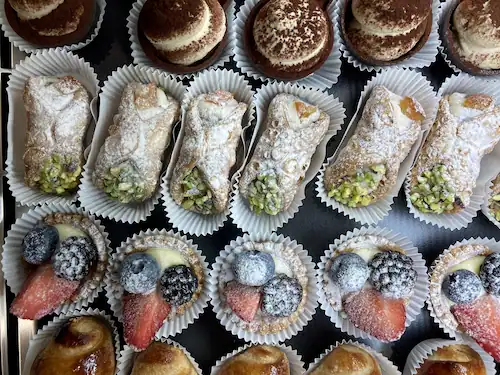

FACTS OM ITALIEN
ITALIENSKE HÅNDTEGN
Italienere bruger deres kropssprog og håndtegn, når de udtrykker sig. Sommetider kan det se dramatisk eller alvorligt ud, men det er det sjældent. De har som kultur en ekspessiv og passioneret tilgang, som ofte bliver synlig, under deres samtaler. Her er nogle af dem.
- Tutto bene
- All Good
- Che vuoi
- What do you want?
- "Non me ne frega"
- I don't care
- Bere
- Lets drink
ORD DER BESKRIVER ITALIENERE
Amore - Elskede
Repræsenterer de mange følelser, passion og kærlighed, som mange Italienere rummer.
Oggettivamente - objektivt
Kulturen er meget social og der er altid en chit chat eller diskussion igang. At ytre sine holdninger er en normalitet og for at beholde snakken fornuftigt er obejktivitet en nødvendighed, men også en måde hvorpå at overbevise andre om sin påstand.
Merenda - eftermiddagssnack
I think the sound of this word is so nice, it has a musicality to it. It also reminds me of when I was a child, staying at my grandparents' house. They made the best merende for me and my sisters, like bread with Nutella, jam, salami, or ice cream.
